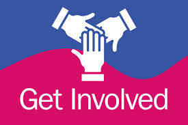

Get Involved

How You Can Help Support Mental Health
There are many ways you can help support mental health in your community:
Share Your Story
If you have experienced mental health difficulties and are comfortable sharing, your story can help others feel less alone.
Support Others
You can help by:
- Listening to friends who are struggling
- Being kind and understanding
- Talking openly about mental health
- Encouraging friends to get professional help
- Checking in regularly with people you care about
Volunteer
Many mental health organisations need volunteers. You could:
- Support a mental health charity in your local area
- Volunteer for national organisations like Mind or YoungMinds
- Help with fundraising events
- Be a peer supporter in your school or workplace
Raise Awareness
Help reduce stigma and increase awareness:
- Participate in Mental Health Awareness Week (May)
- Share mental health information with others
- Talk openly about mental health
- Challenge negative attitudes about mental illness
Look After Your Own Mental Health
The best way you can help others is to look after yourself. Seek help when you need it and practice self-care.